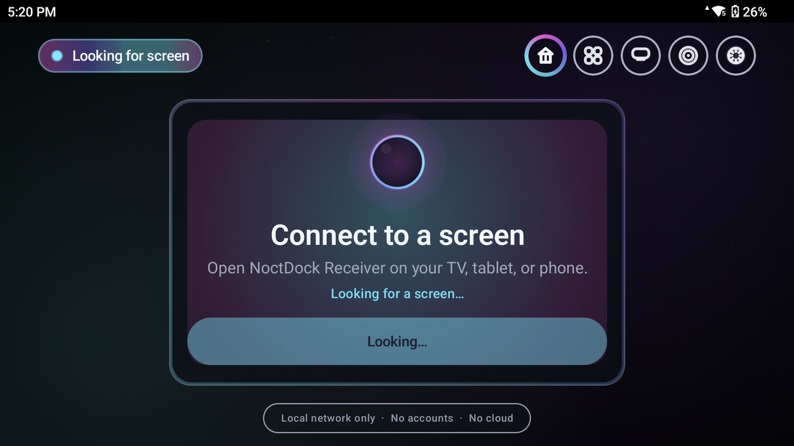
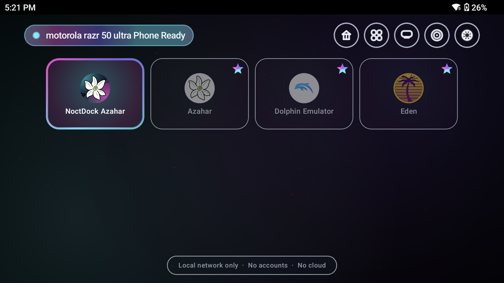
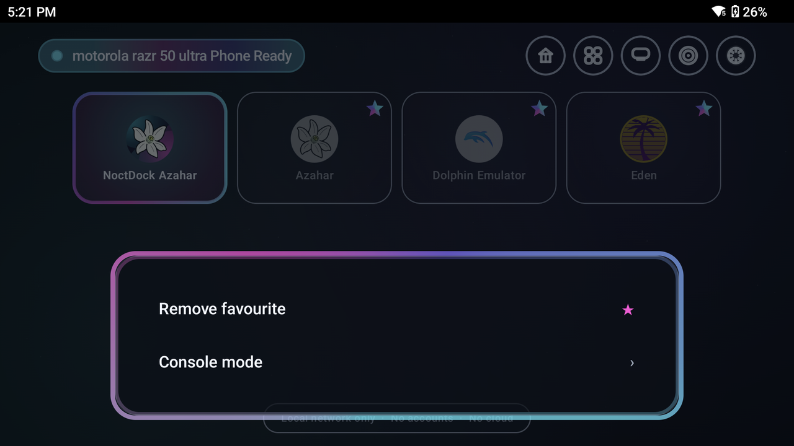
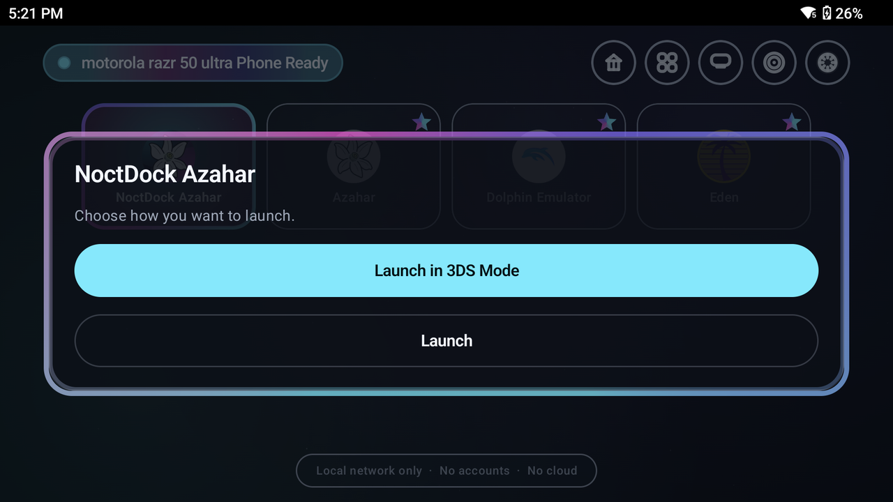

On the handheld
NoctDock Sender is built as a console-style launcher — calm when you are pairing, focused when you are ready to play.

Game Hub — dock portal while looking for a screen.

Trusted screen ready — emulator tiles and NoctDock Azahar on the shelf.

Tile menu — favourite toggle and Console Mode.

Launch or Launch in 3DS Mode from the sender.
Handhelds that feel like consoles
I started NoctDock because I love Android gaming handhelds, but I kept running into the same problem: these devices are powerful enough to feel like little consoles, yet they are still mostly treated like small-screen-only devices.
I wanted something closer to a real docked-console experience — not Chromecast-style mirroring, not remote desktop, not another cloud gaming service, and not something that needs a login or a server. Just my handheld, my local network, my screen, my controller.
What if a Retroid, Odin, or similar Android handheld could behave more like a wireless console?
NoctDock is my attempt to build that properly and share it with the community. It is still in active development, but the goal is simple: make Android handhelds feel more flexible, more console-like, and more useful with the screens people already own.
Install sender and receiver
Pre-built APKs for Android 10+: latest NoctDock release — sender and receiver, debug and release builds.
Sender on the handheld (com.glowseed.noctdock.sender).
Receiver on the TV or display (com.glowseed.noctdock.receiver).
For 3DS top-screen play, also install
NoctDock Azahar.
A few apps, one local experience
- NoctDock Sender — runs on the Android handheld.
- NoctDock Receiver — runs on the TV, Shield, Android TV, phone, tablet, or display.
- NoctDock Core — shared protocol, profiles, discovery, pairing, and diagnostics.
- NoctDock Azahar — separate Azahar fork for experimental 3DS top-screen projection.
Start the receiver on your display. Start the sender on your handheld. Pair once. Pick what to play. Enter Console Mode. Everything stays on your local network.
Local play, not cloud play
NoctDock is not a cloud gaming service. It does not use an online account, upload your games, scrape a game database, collect analytics, or depend on a remote server. It is built around local play, local discovery, and local control.
What is in the box
| Feature | What it does |
|---|---|
| Local discovery | Finds receivers on your LAN with mDNS. |
| Pair once | Short pairing code, then trusted screens stored locally. |
| Console Mode | Hardware-encoded stream from handheld to receiver. |
| Game Hub launcher | Console-style home for apps, emulators, favourites, recents. |
| AVC / HEVC | Best supported codec, with fallback when needed. |
| Console profiles | Performance through Cinema, plus hidden test modes. |
| TV / receiver audio | Optional sound modes when Android allows capture. |
| Screen Cloak | Dim the handheld without dimming the stream on TV. |
| Test My Connection | Probe the LAN and suggest a sensible profile. |
| System Status | Real diagnostics; support reports stay redacted. |
| Android receiver | Use another phone or tablet as the display. |
| NoctDock Azahar | Experimental 3DS top-screen via a custom Azahar fork. |
Presets, not a wall of knobs
Higher is not always better. NoctDock favours smooth play over chasing numbers. If the connection struggles, it should recommend a safer profile instead of silently making the picture ugly or unstable.
| Profile | Resolution | FPS | Purpose |
|---|---|---|---|
| Performance | 1280×720 | 60 | Lowest-latency fallback |
| Balanced | 1280×720 | 60 | Recommended default |
| Quality | 1280×720 | 60 | Cleaner 720p |
| Sharp | 1600×900 | 60 | Strong local networks |
| Cinema | 1920×1080 | 60 | Full HD when the path can handle it |
| 1080 Boost | 1920×1080 | 60 | Hidden compatibility test |
| Extreme | 1920×1080 | 60 | Hidden experimental |
On the handheld
The sender handles discovery, pairing, trusted screens, Console Mode, the launcher, stream profiles, audio modes, Screen Cloak, the 60 Hz helper, connection testing, and diagnostics.
Home is being shaped as a console-style launcher, not a technical dashboard — D-pad friendly, big focused cards, favourites, and a clear play-on-screen flow.
On the big screen
Google TV, Android TV, Shield, phones, tablets, and other Android displays. The receiver waits for a handheld, shows a pairing code when needed, then plays fullscreen with reconnect handling, fit or fill scaling, audio, overlays, and System Status.
For 1080p testing, Ethernet on the receiver is recommended when you can.
3DS top screen on the TV
NoctDock Azahar is a separate Azahar fork for a more natural 3DS setup: top screen on the receiver, bottom screen and touch on the handheld. Kept apart from the main apps so the emulator stays properly attributed and easier for the community to work on. The current direction favours rendering into an encoder surface rather than slow frame readback where possible.
github.com/glowseedstudio/noctdock-azahar
Download APKs:
latest release
— debug (com.glowseed.noctdock.azahar.debug) and release (com.glowseed.noctdock.azahar) builds for Android 10+.
Local network only
No accounts, analytics, ads, cloud relay, external game database, or telemetry uploads. Your library, trusted screens, settings, and diagnostics stay on the device unless you choose to paste a support report into a GitHub issue.
Active development
Sender, receiver, and core modules; discovery and pairing; AVC and HEVC streaming; reconnect hardening; connection testing; Game Hub work; Screen Cloak; 60 Hz helper; TV and phone receivers; Azahar integration. Source is on GitHub. Sender and receiver APKs and NoctDock Azahar are on GitHub Releases.
Built for the community
This started as something I wanted on my own handheld. If it helps other Android handheld users, or inspires better local-play tools, sharing it is the right move. It is not here to replace your emulators or launchers — it sits beside them.
Testing, device reports, documentation, codec work, and Azahar export help are all welcome on GitHub.
What is next
More receiver and handheld testing, a clearer device support matrix, Game Hub polish, profile recommendations from real network tests, Azahar optimisation, Linux receiver exploration, and tuning for Retroid, AYN, AYANEO, Anbernic, Shield, and others.